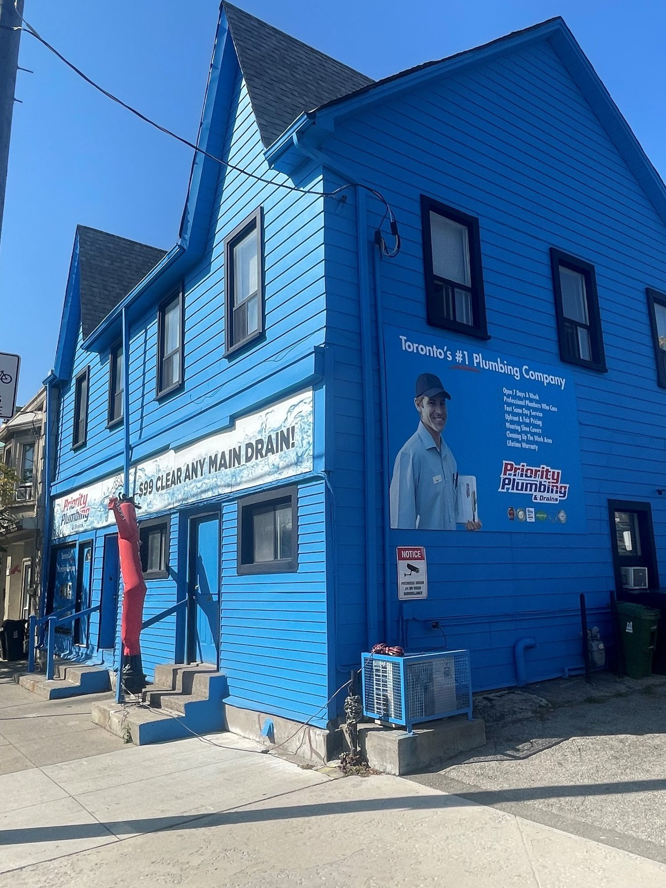

Clay drains and cast iron
Annex, High Park, Roncesvalles and the Junction: century houses with clay sewer laterals that roots love and cast-iron stacks near the end of their life. Camera first, then the right fix.
Home › Service areas
Based at Dupont and Symington in the Junction Triangle, with trucks on the road across Toronto and the GTA every day. If you’re not on the list, call anyway.

Annex, High Park, Roncesvalles and the Junction: century houses with clay sewer laterals that roots love and cast-iron stacks near the end of their life. Camera first, then the right fix.
North York, Etobicoke and Scarborough bungalows from the 50s and 60s: galvanized supply lines that choke pressure and original water heaters.
After every big storm the same streets flood. A backwater valve and a backed-up sump pump are the fix, and the City may subsidize both.
In-suite repairs with building rules, insurance letters and elevator bookings handled. Our crews do it weekly.
Exterior walls, uninsulated additions and hose bibs freeze first. We thaw, repair and tell you how to stop it next year.
Mississauga, Brampton, Vaughan, Thornhill and Oakville get the same trucks, the same pricing and the same 24-hour line.
Pick a time online or call. You get a text when your technician is on the way, a firm price at the door, and a cleaner house than we found it.